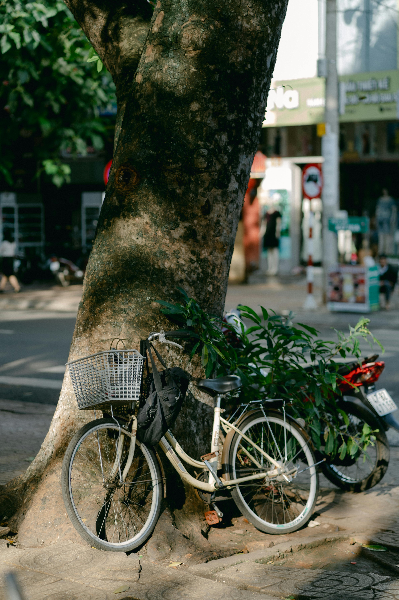

Taken on August 19th 2025 using the Sony ILCE-7M3 camera. It's a JPEG image file type, as JPEG is popular for digital photography and online images becuase it's ideal for saving and sharing photographs.
I chose this photograph becuase it reminded me of my childhood when I would ride bikes and lean it agains a tree.